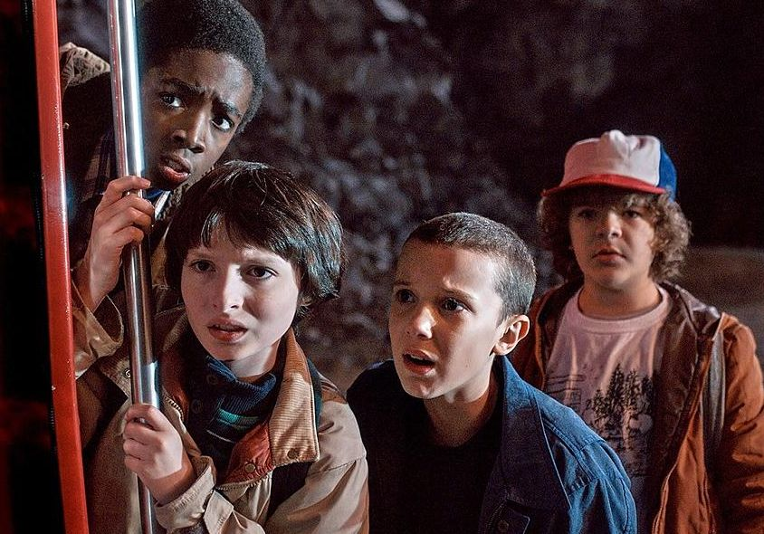
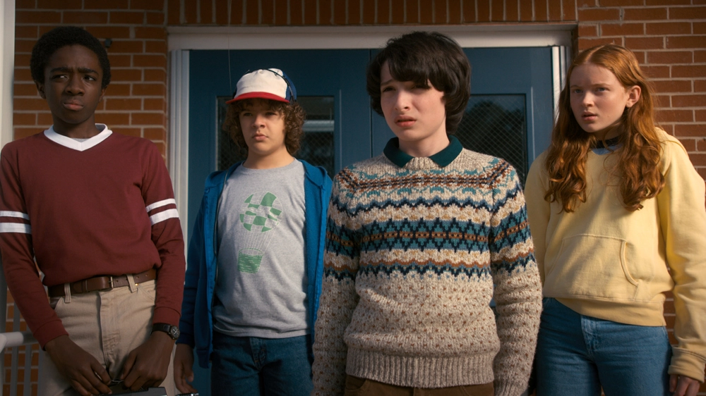
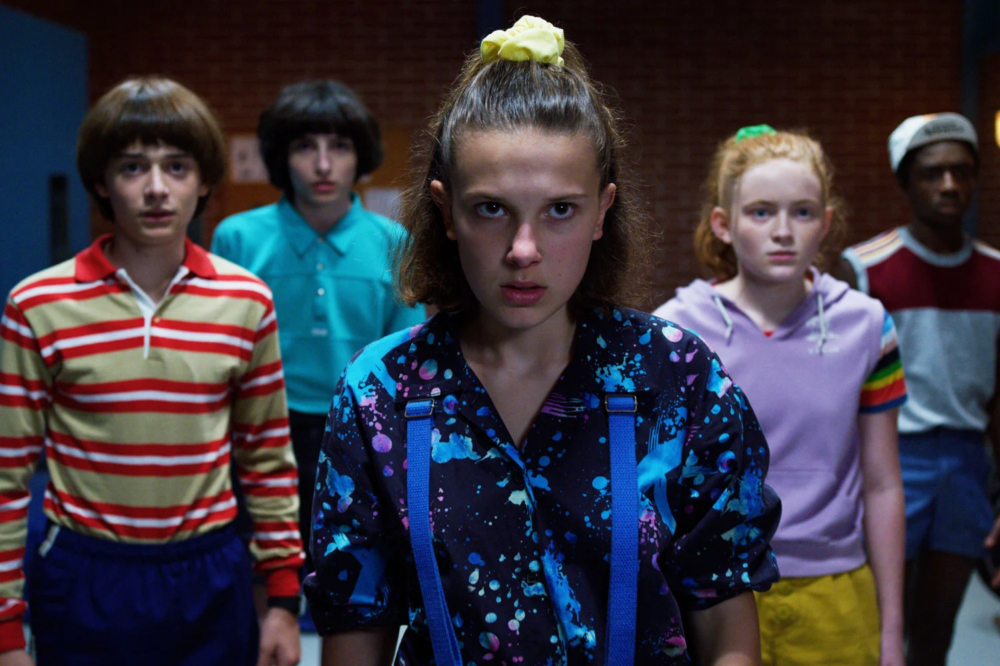
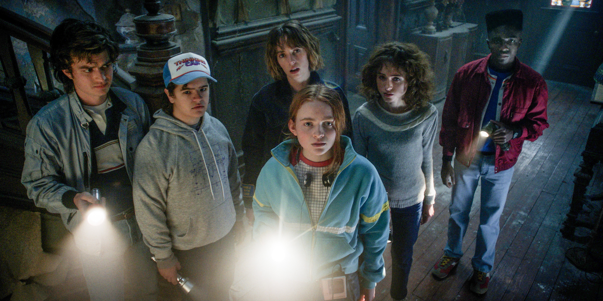

Stranger things starts in the fictional town of Hawkins, Indiana. It is set during 1983. At the time, 12-year-old Will Byers is attacked by a mysterious creature and vanishes after playing Dunges & Dragons with his friends Mike, Dustin, and Lucas. Will’s mother Joyce reports his disappearance to chief of police Sheriff Jim Hopper who begins searching. The lab which accidently released the monster is lead by Dr Brenner who is searching for Elevan, a girl who escaped and has special powers. After nearly getting caught, she finds Mike, Dustin and Lucas. Joyce never stops searching for Will and the kids help find him in the end.
After defeating the Demogorgon, Eleven wakes up in the Upside Down. She escapes through a portal, which leads her back to Hawkins Middle School. Will is back for season 2 and so is the upsides down. He starts seeing visions of a shadow monster until this illusion becomes reality as he is connected to this Mind Flayer. It wants to conquer and kill everything-including Will. They must figure out how to stop this thing.
A growing fleet of possessed Hawkin's resident are taken under the Mind Flayer's wing as his army. Elevan and the rest must figure out a way to stop before they collect more members. Russians have also set up a network of hidden rooms for an experiment underneath the Starcourt mall where they attempt to reopen the gate to the upside down. In the end, Hopper goes missing and is presumed dead when they close the gate and destroy the machine. The Byers family and a currently powerless Eleven prepare to move out of Hawkins to California.
In Kamchatka, Russian guards are instructed to feed a prisoner, but "not the American", to a captured Demogorgon. This season is split between 3 main groups and there seperate places: Hawkins, California, and Russia. At Hawkins, Vecna becomes strong and starts killing people. Elevan and the Byers family are finding it hard to adjust to California. Joyce leaves for Alaska and then Russia to save Hopper. They must stop Vecna before he takes his fourth victim-Max. If he achieves this, Max will be dead and he will have the power to take over the world. In his enclosed, smoke-red mindscape, Eleven takes over Vecna. At that time Nancy, Steve, and Robin were also liting him on fire from the normal side.
